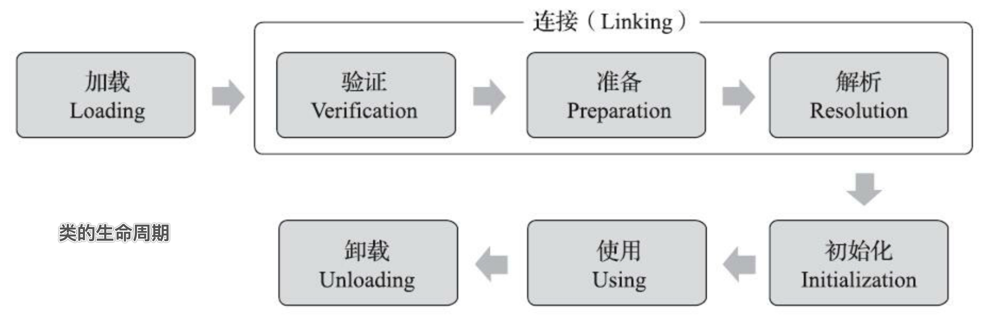

JVM 类加载机制分为五个部分

加载
在内存中生成一个代表这个类的java.lang.Class对象，作为方法去这个类的各种数据的入口。
此阶段完成三件事。
- 通过一个类的全限定名来获取定义此类的二进制字节流。
- 将这个字节流所代表的静态存储结构转化为方法区的运行时数据结构
- 在内存中生成一个代表这个类的java.lang.Class对象，作为方法区这个类的各种数据的访问入 口。
验证
确保Class文件的字节流中包含的信息是否符合当前虚拟机要求
准备
正式为类变量分配内存并设置类变量的初始值阶段，即在方法区中分配这些变量所使用的的内存空间。
解析
虚拟机将常量池中的符号引用替换为直接引用的过程
- 符号引用：class文件中的CONSTANT_CLASS_INFO、CONSTANT_FIELD_INFO、CONSTANT_METHOD_INFO等类型的常量，符号引用与虚拟机实现的布局无关，引用的目标并不一定要已经加载到内存中。各种虚拟机实现的内存布局可以各不相同，但是他们能接受的符号引用必须是一致的，因为符号引用的字面量形式明确定义在java虚拟机规范的Class文件格式中
- 直接引用：可以是执行目标的指针，相对偏移量或是一个能间接定位到目标的句柄。如果有了直接引用，那么引用的目标必定已经存在于内存中
初始化
类加载阶段 的最后一个阶段，前面的类加载阶段之后，除了在加载阶段可以自定义类加载器以外，其它操作都有jvm主导，到了初始化阶段，才开始真正执行类中定义的java程序代码。
初始化阶段是执行类构造器方法的过程。方法是由编译器自动收集类中的类变 量的赋值操作和静态语句块中的语句合并而成的。虚拟机会保证子方法执行之前，父类 的方法已经执行完毕
有且只有以下六种对类型进行主动引用的情况需要立即对类进行初始化：
遇到new、getstatic、putstatic或invokestatic这四条字节码指令时，如果类型没有进行过初始化，则需要先出法器初始化阶段。
- 使用new关键字实例化对象的时候
- 读取或设置一个类型的静态字段(被final修饰、已在编译器把结果放入常量池的静态字段除外)的时候
- 调用一个类型的静态方法的时候
使用java.lang.reflect包的方法对类型进行反射调用的时候，如果类型没有进行过初始化，则需要先触发器初始化
当初始化类的时候，如果发现其父类没有进行过初始化，则需要先触发其父类的初始化
当虚拟机启动时，用户需要制定一个要执行的主类(包含main()方法的哪个类)，虚拟机会先初始化这个主类
当使用 jdk7 新加入的动态语言支持时，如果一个 java.lang.invoke.MethodHandle 实例最后的解析结果为 REF_getStatic、REF_p utStatic、REF_invokeStatic、REF_newInvokeSpecial四种类型的方法句柄，并且这个方法句柄对应的类没有进行过初始化，需要先触发其初始化
当一个接口中定义了jdk8新加入的默认方法(被default关键字修饰的接口方法)时，如果有这个接口的实现类发生了初始化，那该接口在其之前被初始化。
以下几种 对类型的被动引用情况不会执行类初始化：
- 通过子类引用父类的静态字段，只会触发父类的初始化，而不会触发子类的初始化
- 通过对象数组，不会触发该类的初始化
- 常量在编译期间会存入调用类的常量池中，本质上并没有直接引用定义常量的类，不会触发定义常量所在的类
- 通过类名获取Class对象，不会触发类的初始化
- 通过Class.forName加载指定类是，如果指定参数 initialize 为 false 时，也不会触发类初始化，其实这个参数是告诉虚拟机，是否要对类进行初始化
- 通过ClassLoader 默认的 loadClass 方法，也不会触发初始化动作。